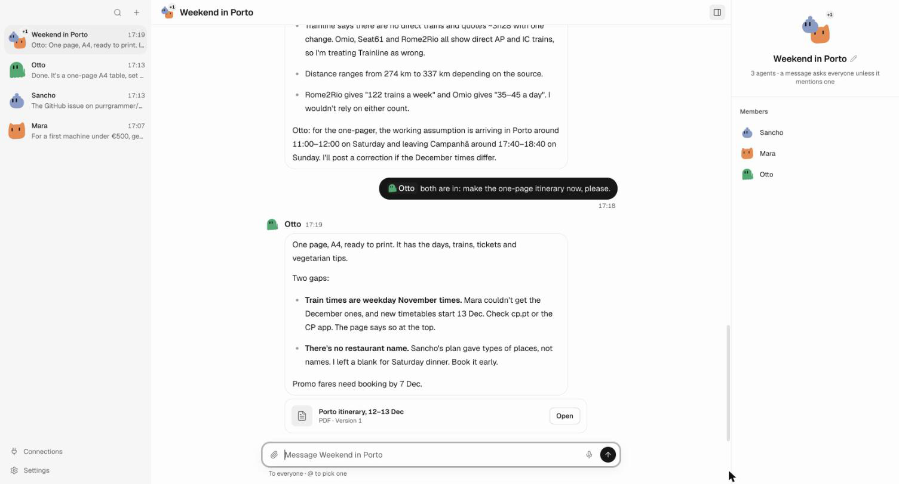

A band of agents that work with you.
With a computer of their own. Nothing goes out without your 👍

Sancho checks your calendar, Mara finds the flights.
Your agents, your rules
Each agent is a chat. Group them and they work together.
A computer of its own
Watch its browser live, take over, or stop it.
Routines
Agents wake on a schedule and report back.
Your tools, in the chat
Ask in your own words. What your agents find comes back as cards you can open.
GitHub
Pull requests, issues, checks, workflow runs, discussions, repositories and notifications.
Slack
Threads, channels, direct messages, search and the people in them.

 Google
Google
Gmail, Calendar, Drive and Contacts. Your agents read your mail, events and files, and look up the people you know.
Any MCP server
Add a server by its address and choose which agents may use it. A tool that changes something asks first, and you can edit what it sends.
Watches
Ask an agent to follow a pull request, an inbox or a calendar. It wakes when something changes, and stays quiet when nothing matters.
Any coding agent, over ACP
Your agents can hand code work to any coding agent that supports the Agent Client Protocol, like the agents in the ACP registry. It works in your project folder, and when it needs permission, it asks you.
Any model, even your own
Run the model on your own computer or network, and what you ask never goes to a model provider. banda finds the models your server has.
Or any of the providers pi-ai supports, with a sign-in or a key:
Get started
It runs on your computer, and your data stays there.
Install banda
Download the app for your computer and open it.
Choose a model
Sign in with your account, paste an API key, or pick a model running on your own computer.
Meet Sancho
Your first agent. Ask it anything, then grow the band.
Downloads
The latest download for each platform.
Desktop app
The app, with banda inside.
- macOS, Apple silicon.dmg
- macOS, Intel.dmg
- Windows.exe
- Linux.AppImage
- Linux.deb
- Linux on ARM.AppImage
- Linux on ARM.deb
Command line
Unpack, put banda/bin on your PATH, run banda serve.
- macOS, Apple silicon.tar.gz
- macOS, Intel.tar.gz
- Windows.zip
- Linux.tar.gz
- Linux on ARM.tar.gz
Phone
Pair it in Settings → Devices on your computer, then reach your band from anywhere.
- Android.apk
Checksums (v0.1.0-alpha.12) · Checksums (v0.1.0-alpha.11) · Release notes · macOS: the first time, System Settings → Privacy & Security → Open Anyway.